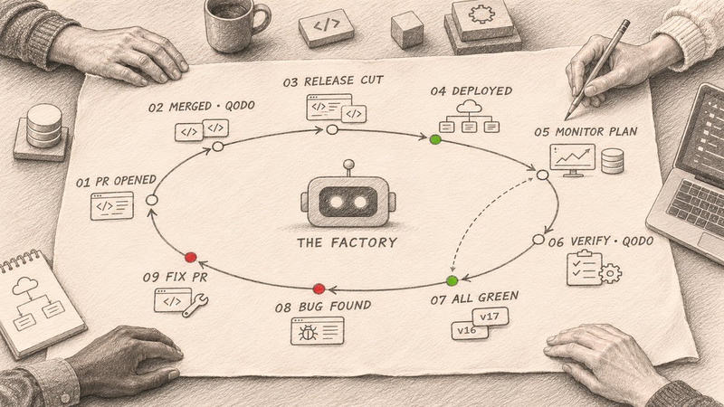

Feature 05 · ARTICLE · 2026 11
Software Factory Engineer: Job Description
We are looking for a Software Factory Engineer: someone who designs, builds, operates, and continuously improves the system that produces our software. The role leads the move from AI-assisted development toward an L4 Autonomous Software Factory, a system that can independently execute, verify, and deliver defined classes of changes within explicit organizational boundaries, and that recognizes when high stakes, uncertainty, or decisions beyond its authority require a human. The objective is faster delivery of meaningful software while maintaining and even improving quality, reliability, security, and control. Your primary engineering artifact is the factory itself, and like any production system it needs to be designed, tested, observed, maintained, and improved.
Architecture and orchestration

You will connect agents, tools, environments, workflows, and humans across the lifecycle: how requirements become tasks, how tasks are split and assigned, how finished work moves through verification, approval, deployment, and production feedback. Contracts between agents should let any agent or model be replaced without redesigning the factory. You will make build-versus-buy decisions and own the result either way.
The factory should recover from interruptions, manage concurrency, resolve routine failures, and escalate exceptions without continuous supervision. When an agent fails, it should keep enough context and history to understand what happened and prevent a repeat. The objective is not the most sophisticated individual agent. It is a coherent production system that reliably uses different agents.
Organizational knowledge
Indexing code is not enough. The factory needs architecture, dependencies, ownership, business requirements, past decisions, incidents, production behavior, and the intent behind changes. It must also tell validated knowledge apart from assumptions, outdated documents, and unverified agent conclusions.
You will find the gaps that matter, identify authoritative sources, validate them with their owners, and turn them into versioned records, executable rules, constraints, tests, and evaluations that keep their evidence and the conditions for their revision. Domain experts keep authority over their definitions; you make that knowledge available and enforceable wherever it affects production.
Independent verification
The author should not self-approve.
An agent can misread a requirement, write tests that encode the same mistake, and be approved by a reviewer sharing the assumption. Verification must rest on protected acceptance criteria the authoring agent cannot redefine. It should reconstruct intent, weigh blast radius, judge business criticality, and surface unverified assumptions. These are related but distinct: a change can touch many components without being likely to fail, while a small change to an authorization path can carry enormous consequences.
Verification must produce inspectable evidence, not an agent’s claim of confidence: what was validated, what could not be established, and why an action was permitted or blocked. The verification system itself must be evaluated, and it belongs inside the execution flow, not bolted on afterward.
Autonomy and decision rights
A documentation update, a bug fix, a database migration, and an authentication change carry different consequences. You will write policies that account for blast radius, criticality, evidence, reversibility, and required authority, expressed where possible as executable controls rather than instructions agents may read inconsistently. The factory must know when to continue, when to verify further, when to escalate, and when to stop safely.
Humans should not become the default exception handler. Nor should autonomy transfer business authority to agents because they can technically act. Leaders, security owners, domain experts, and service owners keep their decision rights; you build the mechanisms that turn those rights into factory behavior.
Feedback and improvement
The factory’s responsibility does not end at merge. It must watch deployments, detect regressions, investigate incidents, and decide whether to revert, repair, or escalate. When it repeats a mistake, fixing the latest output is not enough: was context missing, the requirement ambiguous, the guidance outdated, the verification weak, the orchestration permissive, or the task outside the approved domain? Each answer calls for a different change, followed by evaluation showing whether it helped. Changes to the factory are themselves governed; a self-improving system cannot weaken its own controls without authorization.
Performance and economics
You will measure cost per accepted change, time from intent to validated outcome, escaped defects, verification quality, recovery time, autonomous work within boundaries, and human intervention, including the effort and cognitive burden behind it, since fewer interventions can conceal longer, harder investigations.
Increasing code output or agent activity is not necessarily progress. A faster factory that creates more incidents or consumes more attention may be less productive than what it replaced. A heavily governed one that needs a human for every consequential decision may achieve excellent compliance and miss the economic benefit. And cost efficiency goes without saying.
What you bring
A strong engineer who works at the system level, knows why software fails in production, and can tell an implementation that looks correct from one that is reliable. Experience with agents, orchestration, context engineering, and evaluation matters; fluency with a particular model matters less than the ability to evaluate new ones. You should know that not every rule inferred from code is a standard, and not every historical pattern still holds. When an agent fails, you should be able to say whether the fault lay in the model, the context, the specification, the orchestration, the tools, the verification, or the environment.
This is not a role for someone who only writes prompts, coordinates agents, maintains documentation, or manages processes. You remain a builder.
What success looks like
Not lines of code or agent runs. Success means the factory reliably handles a growing set of tasks with fewer unnecessary interventions, stronger verification, and measurable gains in delivery. Developers spend less time coordinating agents and reconstructing context, and more time defining intent, understanding users, and making architectural decisions. Over time, more classes of change should move into a bounded autonomous domain, backed by evidence and explicit governance. You will be measured by how much meaningful software the organization can safely produce, and how much control it retains as the system becomes more autonomous.
Why this is becoming a discipline
As agents take on more implementation, engineering effort shifts toward intent, context, coordination, verification, and the system around the agents. A capable coding agent is one component; making the components work together remains substantial engineering.
Much of what is needed to change software safely lives outside the code. An agent can read the entire repository and still miss an exception established after an incident; larger context windows do not establish what is authoritative, current, or applicable. Assigning another agent to review is only a starting point, since it may share the author’s mistaken assumptions. Within its approved domain, the factory must be able to reach a safe state before relying on timely human rescue.
Organizations will buy many components, but they still need engineers who integrate them and operate the whole. In a smaller organization this may fall to a platform or experienced product engineer; in a larger one it may be shared among specialists, with explicit ownership of the interfaces between them. The opportunity is to make engineering judgment compound: a better context system improves every agent’s decisions, a better gate prevents a recurring defect, a better recovery path safely widens the work the factory can do.
Let’s go.